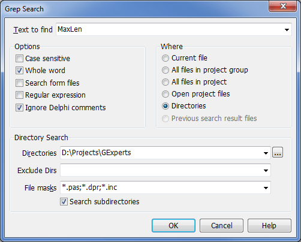

Grep Search |
  
|
Grep Search |
|
GExperts incorporates a powerful search facility that enables you to quickly locate text strings in files (ANSI/ASCII, UTF-8/UTF-16 unicode, and dfm/nfm/xfm form files). Using Grep, you can search the current file, all open project files, all files in your project or project group, or all files in a directory (optionally including sub-directories). The grep search is also available outside the IDE by executing the standalone GExpertsGrep.exe application.
To begin a search, select Grep Search from the GExperts menu. A dialog will appear like the one below where you can enter your search criteria. Note that if you have a string highlighted in the code editor when calling up this dialog, it will be used as the default search string.

The various options in the search dialog are as follows:
Text to Find: The text or regular expression to search for
Options:
Case sensitive: |
Search is case sensitive (a and A are treated as different characters) |
Whole word: |
Return matches that are whole words (delimited by whitespace or punctuation such as "().,<>-{}!@#$") Note that 0-9 and _ are treated as part of a word. |
Search form files: |
Include form files in the search (GExperts can search inside binary format form files) |
Regular expression: |
The text to find is a regular expression |
Ignore Delphi comments: |
Don't look for matches inside Delphi source file comments |
Where (search scope):
Current file: |
Only the file that is currently active for editing |
All files in project: |
All files that are part of the current project. Note that this only includes the files the IDE reports as directly in the project, or those listed in the View Unit(s) dialog. As an example, for Delphi applications, the file must be present in the .dpr uses clause with a proper 'in' specifier. |
All files in project group: |
All files that are part of the current project group |
Open project files: |
All project files that are currently open in a source code editor |
Directories: |
All files specified by the Directory Search options (see below) |
Previous search result files: |
Within files that had matches from the previous search (only enabled if a previous search found at least one match) |
Directory Search:
Note: This portion of the dialog is only enabled if "Search in directories" is selected.
Directories: |
A semicolon separated list of directories to search |
"..." Button: |
Allows browsing for a search directory |
Exclude Dirs |
A semicolon separated list of directories to exclude from the search (the exclusion is done via a substring match on the full directory and file name) |
File masks: |
Limits the search to a semicolon separated list of file extensions |
Include subdirectories: |
Enables recursive searching of the search directories |
Once you have entered the search criteria, click the OK button or press enter to initiate the search. As the search progresses, results will be shown in the Grep Results window. From the results window, you can also perform multi-file search/replace on the matches.
The GExperts Configuration dialog allows setting the Grep Search option to use the current editor identifier as the default search string, if no block is selected.